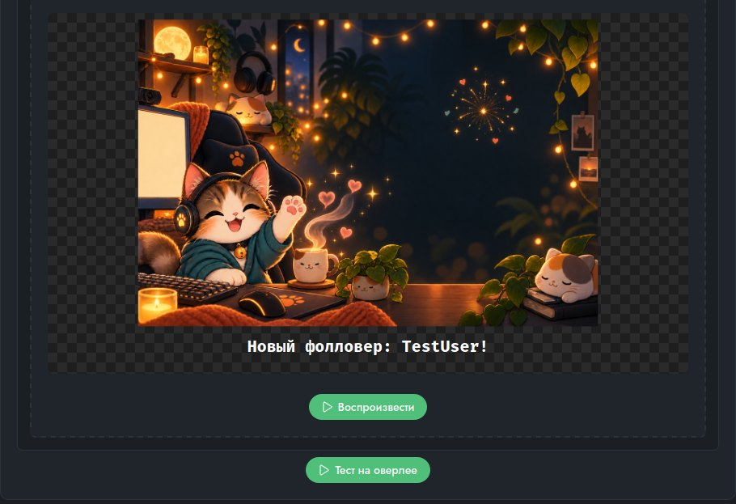
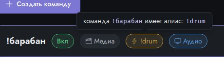
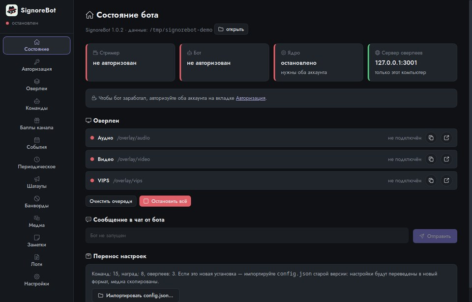
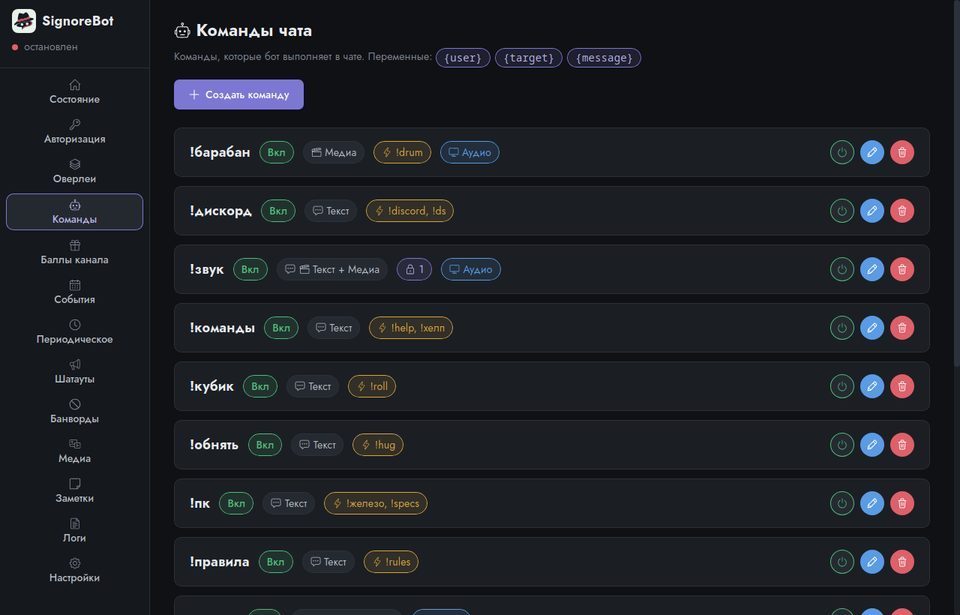
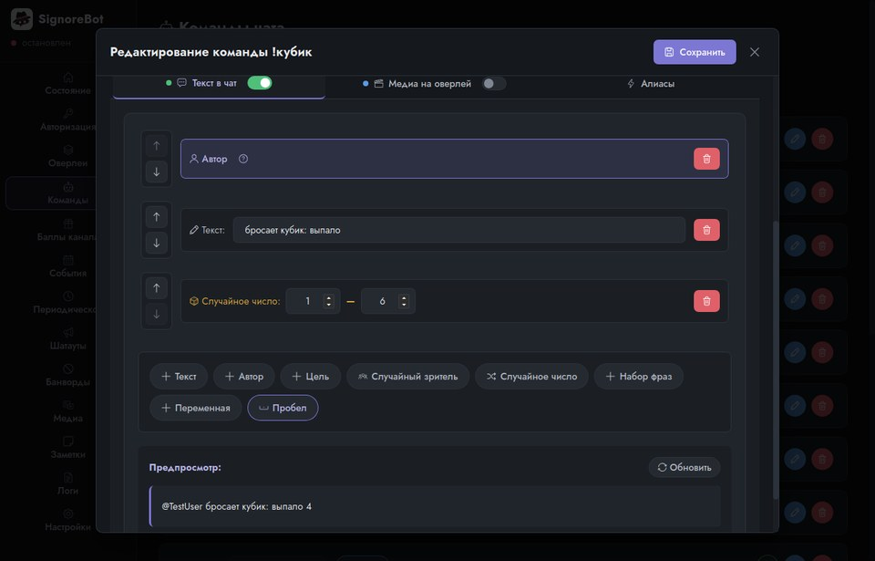
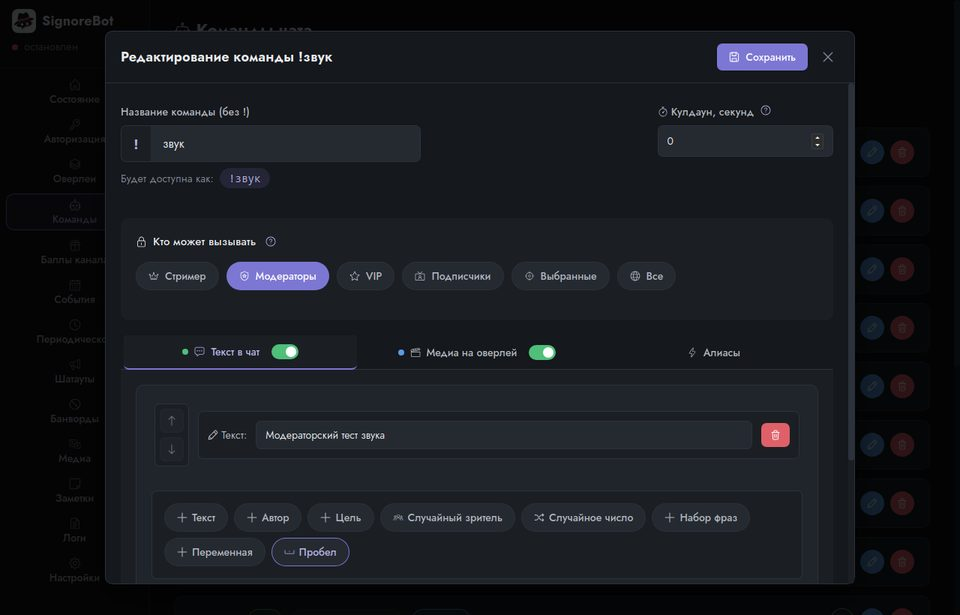
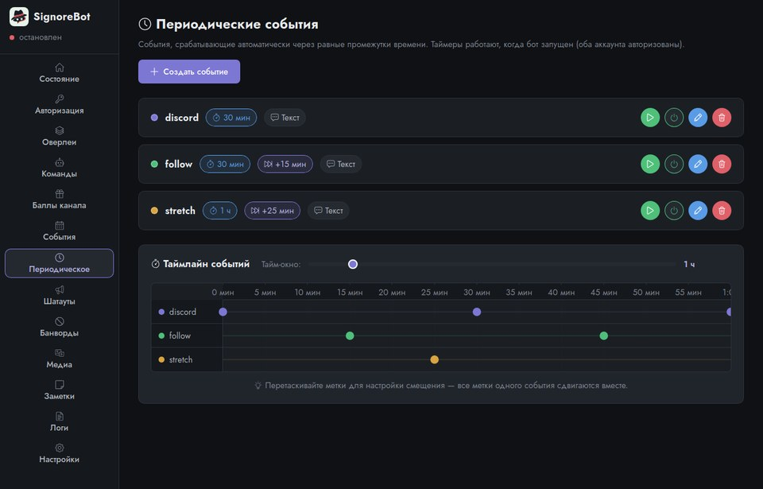
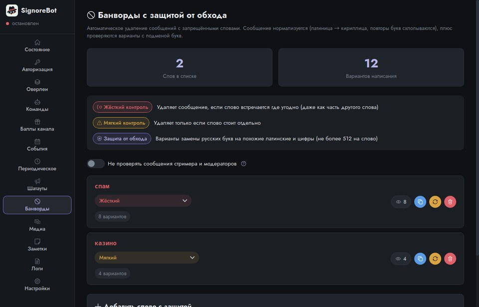
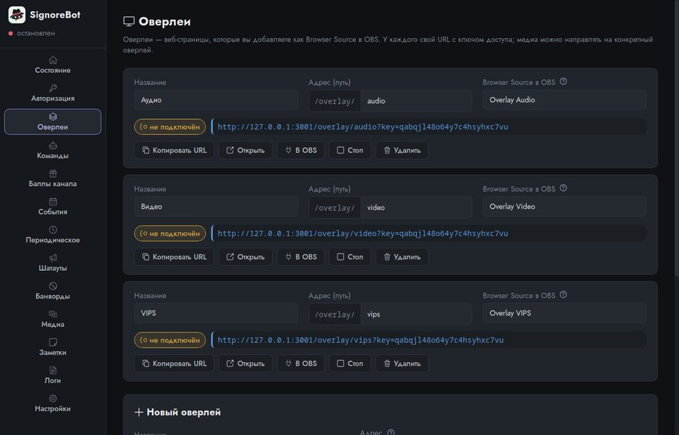
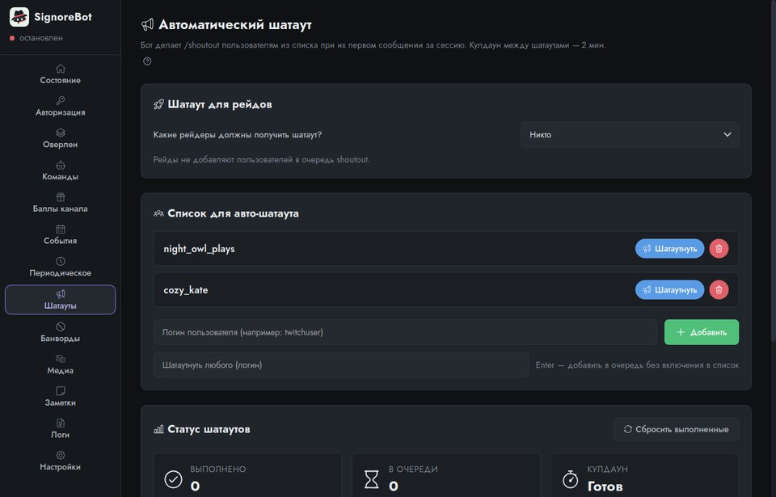

Команды в чате, реакции на награды и события, автоматические шатауты, банворды и медиа-алерты прямо в OBS. Ничего не отправляет на чужие серверы и не требует руководства: интерфейс объясняет себя сам.
Бесплатно, без подписок и ограничений, с открытым исходным кодом. Вход в Twitch хранится в защищённом хранилище вашей системы и никуда не отправляется.

Бот работает на вашем компьютере, а не на чьём-то сервере. Настройки, картинки и звуки остаются у вас, а вход в Twitch хранится в защищённом хранилище вашей системы. Вход подтверждается кодом на странице Twitch, пароль приложению не нужен. Не нужно заводить аккаунт в стороннем сервисе и надеяться, что он сегодня работает.
Руководства пользователя нет, потому что оно не нужно. У каждой настройки подсказка рядом, а капсулы на карточках при наведении рассказывают о себе вашими же данными: какие алиасы у команды, кто может её вызывать, на какой оверлей уйдёт медиа. Предпросмотр показывает алерт ровно так, как увидит зритель. Если бот чего-то не может, он говорит об этом словами и предлагает, что сделать.

Нет платной версии, подписки, лимитов на число команд или оверлеев, «премиум»-функций и рекламы. Всё, что умеет бот, доступно каждому сразу — и так останется. Это принцип проекта, а не этап перед монетизацией. Код открыт под лицензией MIT.
Реакции на !команды и награды за баллы канала: текст в чат из конструктора (автор, цель, случайное число, набор фраз), медиа на оверлей или всё вместе. Права по ролям или списку ников, кулдауны, алиасы.
Фолловеры, подписки, подарки, bits, рейды, watch streak. Периодические сообщения по расписанию, привязанному к запуску, с опцией «сработать сразу».
Сколько угодно оверлеев — каждый со своим адресом и ключом доступа. Алерты встают в очередь и не дублируются, есть анимации появления и текста, видео можно показать без фона. Предпросмотр в панели совпадает с OBS пиксель в пиксель.
Автоматический /shoutout зрителям из списка при первом сообщении, очередь с учётом лимитов Twitch, ручной шатаут любого, статус выполненных.
Латиница вместо кириллицы, повторы букв, разделители — нормализация и автоматически сгенерированные варианты написания. Жёсткий и мягкий режим, исключение модераторов.
Каталог медиафайлов с предпросмотром и уборкой неиспользуемых. Папка данных на любом диске. Проверка новых версий по релизам GitHub: плашка со ссылкой, настройки и медиа при обновлении остаются на месте.
Кликните, чтобы увеличить. Разделы «Команды», «Баллы канала», «События» и «Периодическое» устроены одинаково — показан один, дальше то, чем они отличаются.








Версия 1.0.2. Файлы отдаёт GitHub, установка не требует ни аккаунта, ни регистрации.
sudo apt install ./SignoreBot_1.0.2-linux-amd64.debchmod +x SignoreBot_1.0.2-linux-amd64.AppImageВсе сборки и прошлые версии — на странице релизов. Обновления приложение проверяет само и показывает плашку со ссылкой; настройки и медиа при обновлении остаются на месте. Собрать из исходников — README.
Вкладка Авторизация: стример (события канала и чтение чата) и бот (сообщения в чат). Нажмите «Авторизоваться» — откроется страница Twitch с полем для кода, код показан в панели. Для второго аккаунта удобнее «Скопировать ссылку» и открыть её в браузере, где залогинен бот. Бот стартует сам, как только оба аккаунта готовы.
Вкладка Оверлеи: у каждого оверлея кнопка «Копировать URL» — вставьте адрес в Browser Source (ширина 1920, высота 1080). Неважно, что запущено первым — OBS или бот. Если включить связь с OBS на вкладке «Оверлеи», бот сам пропишет адреса и при необходимости перезагрузит источники.
Команды, Баллы канала, События, Периодическое — у каждой реакции текст в чат и/или медиа на оверлей. Медиафайлы добавляются кнопкой «Добавить» и живут в папке данных приложения. «Показать» в редакторе — предпросмотр ровно в том виде, как на оверлее; «Тест на оверлее» — отправить в OBS прямо сейчас.
На вкладке Состояние нажмите «Импортировать config.json» и выберите config.json старой версии. Команды, награды, события, периодика, банворды, оверлеи и медиа переедут автоматически. Токены не переносятся — авторизуйтесь заново.
Бот сам это заметит: через 15 секунд после запуска появится жёлтый баннер с перечнем неподключённых оверлеев, а если окно свёрнуто в трей — системное уведомление (и напоминание каждые 10 минут). Что сделать: в OBS у Browser Source нажать «Обновить» — или включить интеграцию с OBS на вкладке «Оверлеи», тогда бот перезагрузит источники сам.
Почти всегда причина — две копии приложения одновременно: старая осталась в трее, а вы запустили новую. Twitch держит вход только для одной копии, и две копии по очереди сбрасывают его друг другу. Начиная с 1.0.0 вторая копия не запускается, а показывает окно первой; если это случилось с более ранней сборкой — закройте все копии через меню трея «Выход» и авторизуйтесь заново. Также Twitch отзывает токен после 30 дней без запусков — это нормально.
Shoutout работает только на живом стриме и не чаще раза в 2 минуты, а одному и тому же каналу — раз в час. Бот разбирает эти ответы: «уже был в течение часа» снимается как выполненный, лимит «раз в 2 минуты» — ожидание с обратным отсчётом в «Статусе шатаутов».
Настройки → Папка данных: выберите папку на другом диске, оставьте включённым «Скопировать текущие данные» и нажмите «Перенести и перезапустить». Старая папка не удаляется — убедитесь, что всё на месте, и удалите её вручную.
По умолчанию да: окно прячется в трей, бот работает. Выход — через меню иконки в трее. Изменить: Настройки → Окно и трей.
Linux: ~/.local/share/ru.aumphaadr.signorebot/, Windows: %APPDATA%\ru.aumphaadr.signorebot\ — config.json (без токенов), media/, резервные копии конфига, логи. Вход в Twitch — в защищённом хранилище системы: на Windows это Диспетчер учётных данных, на Linux — связка ключей. Экспорт настроек из панели никогда не включает вход в Twitch и ключ оверлеев.
При запуске приложение сверяет свою версию с последним релизом на GitHub и показывает плашку со ссылкой (можно отключить в Настройки → Обновления). Самообновления нет: скачайте новую сборку и запустите — настройки и медиа сохранятся.